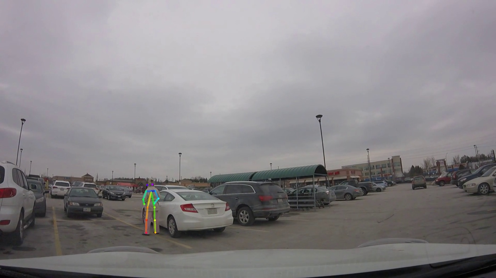
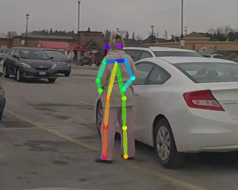
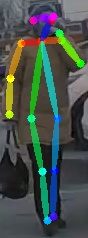

Pedestrian Intent Estimation
Predicting whether a pedestrian is about to cross the street from how they're standing and moving. Pedestrians are detected with SSD, their 2D pose is estimated with OpenPose, and a classifier trained on the JAAD driving dataset predicts crossing or not crossing from a short window of poses. Based on Fang and López, "Is the Pedestrian Going to Cross? Answering by 2D Pose Estimation".
Results
Pose estimation



Crossing classifier
Evaluated on a held-out 20% of the 5,766 pose windows (1,154 windows):
| Class | Precision | Recall | F1 | Windows |
|---|---|---|---|---|
| Not crossing | 0.98 | 0.92 | 0.95 | 514 |
| Crossing | 0.94 | 0.99 | 0.96 | 640 |
| Overall accuracy | 0.956 | |||
| Predicted not crossing | Predicted crossing | |
|---|---|---|
| Not crossing | 471 | 43 |
| Crossing | 8 | 632 |
Caveat. The windows overlap (each starts one frame after the previous one) and were split into train and test at random, so windows from the same pedestrian appear in both. These numbers are likely optimistic; a split by video or by pedestrian would give a fairer estimate.
Approach
- Detection. A SSD300 detector pretrained on PASCAL VOC finds people in each frame.
- Pose. A PyTorch port of OpenPose estimates 2D body keypoints inside each detected box.
- Pose features. From 9 body keypoints, each frame becomes 396 features: horizontal and vertical distances and two angles for every pair of keypoints (144), plus the interior angles of every triangle of keypoints (252).
- Windows. Features from 14 consecutive frames are stacked into one 5,544-dimensional sample. Training windows come from JAAD's high-visibility pedestrians, sliding one frame at a time and skipping any window with occlusion.
- Classifier. A random forest (400 trees, max depth 15) predicts whether the pedestrian is crossing.
The repo also includes ROS and Gazebo files for simulating vehicle control.
Next steps
- Track pedestrians across frames (e.g. DeepSORT), so each person's pose history stays together when running on full videos.
- Evaluate on a split by video, so the test set only has unseen pedestrians.
- Try 3D pose instead of 2D.
References
- Zhijie Fang and Antonio M. López. "Is the Pedestrian Going to Cross? Answering by 2D Pose Estimation." IEEE Intelligent Vehicles Symposium, 2018.
- Iuliia Kotseruba, Amir Rasouli, and John K. Tsotsos. "Joint Attention in Autonomous Driving (JAAD)." 2016.
- Amir Rasouli et al. "PIE: A Large-Scale Dataset and Models for Pedestrian Intention Estimation and Trajectory Prediction." ICCV 2019.
- ssd.pytorch
- pytorch-pose-estimation